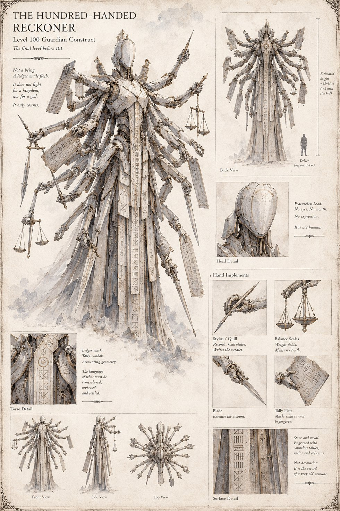

The Hundred-Handed Reckoner
Guardian Construct · Level 100 · the final level before 101
The last guardian before the stair no map ever shows: a featureless, faceless construct built from dozens of jointed arms, each carrying a different instrument of account — a stylus to record and calculate, a balance to weigh debts, a blade to execute them, and a tally plate for what can't be forgiven. It fights for no kingdom and no god. Its surface is engraved, top to bottom, with tally marks and accounting geometry that guild scholars agree is a record rather than decoration, of a very old account nobody still living can read.
“Not a being. A ledger made flesh. It does not fight for a kingdom, nor for a god. It only counts.”
Appears in The Stolen Prince War